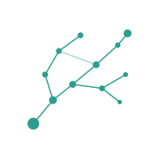

Comparativa · 03 / 07
Clase
estandar
vs. ruta
propia
Modelo antiguo
Un ritmo para todos.
Temario fijo, semana a semana.
Evaluación idéntica para cada estudiante.
Éxito = cumplir el promedio.
Con sapiens
Un ritmo por persona.
La ruta se recalibra tras cada sesión.
Evaluación ligera, continua y sin castigo.
Éxito = tu próximo paso, a tu medida.

sapiens
03
/ 07